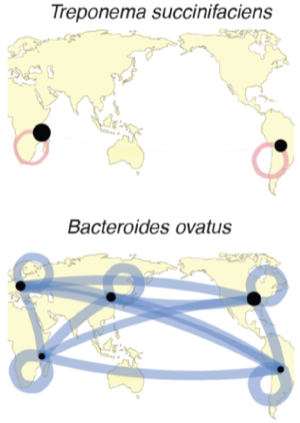
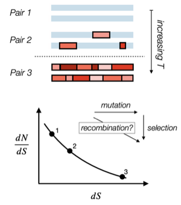
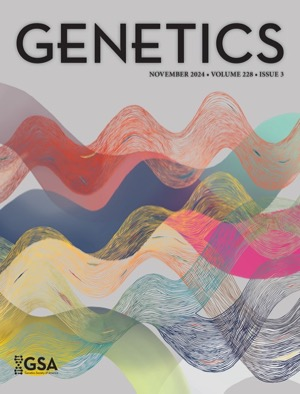
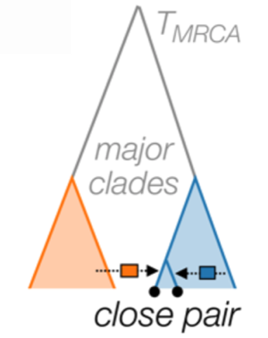
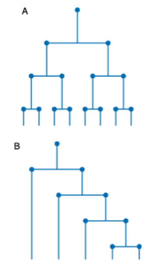

Selected Publications
* equal contribution, † equal senior contribution. Full list on Google Scholar.
2026
-

2025
-

Dynamics of dN/dS within Recombining Bacterial PopulationsbioRxiv (preprint), 2025Code: dNdS_dynamics
2024
-

Linkage Equilibrium between Rare MutationsGenetics, 2024Featured article · Cover art (Anastasia Lyulina) -

2020
-

Scale-Invariant Topology and Bursty Branching of Evolutionary Trees Emerge from Niche ConstructionProceedings of the National Academy of Sciences, 2020